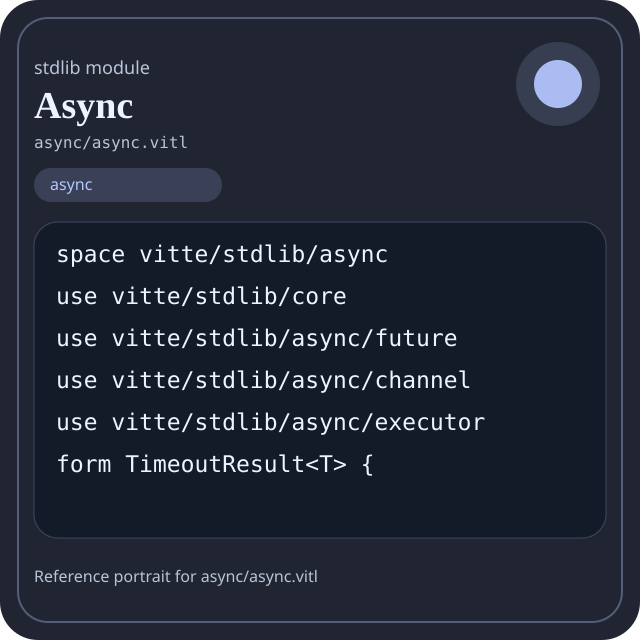

Stdlib module async/async.vitl
This page is a wiki-style reference for one concrete stdlib file. It explains what the file owns, where it fits in the family, and how to decide whether this is the right surface to depend on.

async/async.vitl.Family: async
Kind: public stdlib surface
Page style: this reference follows the same “encyclopedic card + portrait + usage contract” logic as the keyword pages, but for stdlib modules.
Summary
- Overview
- Purpose
- Taxonomy
- Implementation profile
- Top-level API inventory
- Position in family
- Declaration map
- Representative signatures
- How to use this module
- User example
- Keyword coverage
- Source shape
- Source landmarks
- Source organization
- Complete API catalog
- Integration boundaries
- Composition guidance
- Relationship table
- Neighbor modules
Overview
| Field | Value |
|---|---|
| Path | async/async.vitl |
| Family | async |
| Kind | public stdlib surface |
| Line count | 281 |
| Declared procedures | 29 |
| Declared forms/picks | 3 |
`async/async.vitl` is a public stdlib surface inside the `async` family. It should be read as one focused slice of the broader family responsibility: Future, channel, executor, and task orchestration helpers.
Purpose
This file should be chosen because of responsibility, not because its name “sounds close enough”. Inside the async family, it carries one focused part of the contract and keeps that responsibility separate from neighboring concerns.
- Use this module when coordination and scheduling are explicit parts of the design.
- A pipeline can spawn tasks, exchange messages through channels, and join through the executor boundary.
Taxonomy
Think of this page as a generated encyclopedia entry rather than a hand-written tutorial. The goal is to show what kind of module this is, how dense it is, and what reading strategy makes sense before depending on it.
- Large algorithm surface: this file exposes many procedures and likely acts as a domain toolkit rather than a single thin wrapper.
- Owns domain vocabulary: the module declares data shapes in addition to executable helpers, so its types are part of the contract.
- Has tuning constants: part of the module behavior is controlled by named constants that document default precision, limits, or policy.
- Narrow dependency fan-in: a small set of imports suggests a focused collaboration surface.
- Explicit export surface: the file ends with visible export declarations instead of relying only on implicit namespace discovery.
Implementation profile
This profile is inferred directly from the source text. It does not replace reading the file, but it tells you quickly whether the module is mostly declarative, loop-heavy, branch-heavy, or organized around many small exits.
| Signal | Count | What it suggests |
|---|---|---|
if | 7 | Branching density and local decision-making. |
while | 6 | Loop-heavy or iterative implementation style. |
for | 0 | Collection-style traversal at source level. |
match | 0 | Variant-driven branching or grammar-style decoding. |
let | 30 | Local state and intermediate value density. |
give | 33 | Number of explicit exit points and result shaping. |
Top-level API inventory
| Surface | Items |
|---|---|
| Procedures | global_executor, async, await, try_await, spawn_task, join_all, async_sleep, init_executor, start_executor, stop_executor, executor_runtime_stats, create_channel |
| Forms | TimeoutResult, BatchProcessor, TaskPool |
| Picks | none declared at top level |
| Constants | GLOBAL_EXECUTOR |
| Exports | * |
Imported surfaces
vitte/stdlib/core use vitte/stdlib/async/future use vitte/stdlib/async/channel use vitte/stdlib/async/executor form TimeoutResult
Position in family
This file is module 1 of 4 in the async family when ordered by path. By procedure count it ranks 1, and by line count it ranks 1. Those ranks are useful as rough signals of breadth, not as quality judgments.
Declaration map
The declaration map turns raw source into a scan-friendly catalog. It is useful when the file is large enough that a reader wants to orient by kinds of surfaces first.
| Line | Name | Kind | Role |
|---|---|---|---|
| 1 | vitte/stdlib/async | space | Declares the namespace that anchors this file in the stdlib tree. |
| 3 | vitte/stdlib/core | use | Imports a sibling or supporting surface used by the module. |
| 4 | vitte/stdlib/async/future | use | Imports a sibling or supporting surface used by the module. |
| 5 | vitte/stdlib/async/channel | use | Imports a sibling or supporting surface used by the module. |
| 6 | vitte/stdlib/async/executor | use | Imports a sibling or supporting surface used by the module. |
| 8 | TimeoutResult | form | Introduces a structured data shape that other procedures can exchange. |
| 13 | BatchProcessor | form | Introduces a structured data shape that other procedures can exchange. |
| 20 | TaskPool | form | Introduces a structured data shape that other procedures can exchange. |
| 27 | GLOBAL_EXECUTOR | const | Defines a named constant reused across the module. |
| 37 | global_executor | proc | Owns coordination, scheduling, or concurrency behavior. |
| 41 | async | proc | Represents one top-level surface in the file contract and should be read as part of the module boundary. |
| 50 | await | proc | Represents one top-level surface in the file contract and should be read as part of the module boundary. |
| 54 | try_await | proc | Represents one top-level surface in the file contract and should be read as part of the module boundary. |
| 65 | spawn_task | proc | Represents one top-level surface in the file contract and should be read as part of the module boundary. |
| 70 | join_all | proc | Owns path semantics, traversal, or normalization. |
| 92 | async_sleep | proc | Represents one top-level surface in the file contract and should be read as part of the module boundary. |
| 103 | init_executor | proc | Owns coordination, scheduling, or concurrency behavior. |
| 114 | start_executor | proc | Owns coordination, scheduling, or concurrency behavior. |
| 118 | stop_executor | proc | Owns coordination, scheduling, or concurrency behavior. |
| 122 | executor_runtime_stats | proc | Owns coordination, scheduling, or concurrency behavior. |
| 126 | create_channel | proc | Owns coordination, scheduling, or concurrency behavior. |
| 130 | parallel_all | proc | Represents one top-level surface in the file contract and should be read as part of the module boundary. |
| 134 | race_first | proc | Represents one top-level surface in the file contract and should be read as part of the module boundary. |
| 138 | with_timeout | proc | Represents one top-level surface in the file contract and should be read as part of the module boundary. |
| 155 | timeout_has_value | proc | Represents one top-level surface in the file contract and should be read as part of the module boundary. |
| 159 | timeout_value | proc | Represents one top-level surface in the file contract and should be read as part of the module boundary. |
| 167 | retry_async | proc | Represents one top-level surface in the file contract and should be read as part of the module boundary. |
| 183 | batch_processor_new | proc | Represents one top-level surface in the file contract and should be read as part of the module boundary. |
| 193 | batch_add | proc | Represents one top-level surface in the file contract and should be read as part of the module boundary. |
| 203 | task_pool_new | proc | Represents one top-level surface in the file contract and should be read as part of the module boundary. |
| 220 | task_pool_submit | proc | Represents one top-level surface in the file contract and should be read as part of the module boundary. |
| 228 | task_pool_wait_all | proc | Represents one top-level surface in the file contract and should be read as part of the module boundary. |
| 233 | task_pool_shutdown | proc | Represents one top-level surface in the file contract and should be read as part of the module boundary. |
| 238 | sleep_ms | proc | Represents one top-level surface in the file contract and should be read as part of the module boundary. |
| 242 | async_version | proc | Represents one top-level surface in the file contract and should be read as part of the module boundary. |
| 246 | async_ready | proc | Represents one top-level surface in the file contract and should be read as part of the module boundary. |
| 250 | async_selftest_value | proc | Represents one top-level surface in the file contract and should be read as part of the module boundary. |
| 254 | async_selftest | proc | Represents one top-level surface in the file contract and should be read as part of the module boundary. |
The table is exhaustive for top-level declarations of the selected kinds. This file declares 38 matching surfaces.
Representative signatures
These signatures are shown in source order so the page keeps the feel of a reference manual, not just a keyword cloud.
form TimeoutResult<T> {(line 8)form BatchProcessor<T, U> {(line 13)form TaskPool {(line 20)const GLOBAL_EXECUTOR: Executor = Executor {(line 27)proc global_executor() -> Executor {(line 37)proc async<T>(body: proc) -> Future<T> {(line 41)proc await<T>(fut: Future<T>) -> T {(line 50)proc try_await<T>(fut: Future<T>, timeout_ms: int) -> bool {(line 54)proc spawn_task<T>(fut: Future<T>) -> int {(line 65)proc join_all(task_ids: [int]) -> bool {(line 70)proc async_sleep(ms: int) -> Future<bool> {(line 92)proc init_executor(num_workers: int) -> bool {(line 103)proc start_executor() -> int {(line 114)proc stop_executor() -> int {(line 118)proc executor_runtime_stats() -> ExecutorStats {(line 122)proc create_channel<T>(capacity: int) -> Channel<T> {(line 126)proc parallel_all<T>(futures: [Future<T>]) -> [T] {(line 130)proc race_first<T>(futures: [Future<T>]) -> T {(line 134)
The list is intentionally capped here; the source file declares 33 matching signatures in total.
How to use this module
Start by reading the file as an ownership boundary. Ask three questions: what enters this module, what stable types or procedures it exports, and what adjacent module should stay outside of it.
- Read
spaceand top-level imports first so the ownership boundary ofasync/async.vitlis explicit. - Scan constants before procedures; they often encode precision, limits, or policy assumptions that explain later behavior.
- Read declared forms and picks before algorithms so the data vocabulary is stable in your head.
- Traverse procedures in source order; the early helpers usually explain the naming and numeric conventions used later.
- Only after that compare neighbor modules, because the right boundary choice matters more than memorizing one helper name.
User example
This example is generated from the actual stdlib module surface. Its job is not to be the smallest snippet possible; its job is to show a realistic consumer-shaped file that exercises the module and mirrors the language keywords the module itself relies on.
space demo/async_async
use vitte/stdlib/async
const SAMPLE_LABEL: string = "demo"
form UserReport {
label: string,
ready: bool
}
proc run_example() -> UserReport {
let entries = parallel_all([])
let ready: bool = try_await(Future<T>(), 1)
let failed: bool = false
let stable: bool = ready and true
let idx: int = 0
let count: int = 0
while idx < entries.len {
set count = count + 1
set idx = idx + 1
}
if not ready {
give UserReport { label: "not-ready", ready: false }
}
give UserReport { label: "ok", ready: true }
}
export run_exampleKeyword coverage
This table makes the “all keywords of the module” requirement auditable. It compares the detected Vitte keywords in the source file with the generated consumer example above.
| Keyword | Present in module source | Used in generated user example |
|---|---|---|
space | yes | yes |
use | yes | yes |
const | yes | yes |
form | yes | yes |
proc | yes | yes |
let | yes | yes |
set | yes | yes |
if | yes | yes |
while | yes | yes |
give | yes | yes |
export | yes | yes |
true | yes | yes |
false | yes | yes |
and | yes | yes |
not | yes | yes |
The generated snippet exercises every detected Vitte keyword used by this module.
Source shape
space vitte/stdlib/async
use vitte/stdlib/core
use vitte/stdlib/async/future
use vitte/stdlib/async/channel
use vitte/stdlib/async/executor
form TimeoutResult<T> {
completed: bool,
values: [T],
}
form BatchProcessor<T, U> {The excerpt is not meant to replace the file. It exists to make the module recognizable at first glance, the same way a Wikipedia infobox helps the reader orient before reading the whole article.
Source landmarks
Large files are easier to retain when they have visible landmarks. When the source contains explicit section banners, they are surfaced here; otherwise the first major declarations are used as anchors.
- Line 1:
space vitte/stdlib/async - Line 3:
use vitte/stdlib/core - Line 4:
use vitte/stdlib/async/future - Line 5:
use vitte/stdlib/async/channel - Line 6:
use vitte/stdlib/async/executor - Line 8:
form TimeoutResult<T> { - Line 13:
form BatchProcessor<T, U> { - Line 20:
form TaskPool {
Source organization
When a file carries its own internal chaptering, those chapters usually reveal the intended reading order better than a flat symbol list. This section reconstructs that organization from the source itself.
File surfaces
Top-level items: 39. Procedures: 29. Data surfaces: 3. Constants: 1.
First visible names: vitte/stdlib/async, vitte/stdlib/core, vitte/stdlib/async/future, vitte/stdlib/async/channel, vitte/stdlib/async/executor, TimeoutResult, BatchProcessor, TaskPool, GLOBAL_EXECUTOR, global_executor
Complete API catalog
This catalog is the exhaustive file-level index for the module. It is intentionally closer to a generated encyclopedia appendix than to a tutorial summary.
Constants
| Line | Name | Signature | Role |
|---|---|---|---|
| 27 | GLOBAL_EXECUTOR | const GLOBAL_EXECUTOR: Executor = Executor { | Defines a named constant reused across the module. |
Data surfaces
| Line | Name | Signature | Role |
|---|---|---|---|
| 8 | TimeoutResult | form TimeoutResult<T> { | Introduces a structured data shape that other procedures can exchange. |
| 13 | BatchProcessor | form BatchProcessor<T, U> { | Introduces a structured data shape that other procedures can exchange. |
| 20 | TaskPool | form TaskPool { | Introduces a structured data shape that other procedures can exchange. |
Procedures
| Line | Name | Signature | Role |
|---|---|---|---|
| 37 | global_executor | proc global_executor() -> Executor { | Owns coordination, scheduling, or concurrency behavior. |
| 41 | async | proc async<T>(body: proc) -> Future<T> { | Represents one top-level surface in the file contract and should be read as part of the module boundary. |
| 50 | await | proc await<T>(fut: Future<T>) -> T { | Represents one top-level surface in the file contract and should be read as part of the module boundary. |
| 54 | try_await | proc try_await<T>(fut: Future<T>, timeout_ms: int) -> bool { | Represents one top-level surface in the file contract and should be read as part of the module boundary. |
| 65 | spawn_task | proc spawn_task<T>(fut: Future<T>) -> int { | Represents one top-level surface in the file contract and should be read as part of the module boundary. |
| 70 | join_all | proc join_all(task_ids: [int]) -> bool { | Owns path semantics, traversal, or normalization. |
| 92 | async_sleep | proc async_sleep(ms: int) -> Future<bool> { | Represents one top-level surface in the file contract and should be read as part of the module boundary. |
| 103 | init_executor | proc init_executor(num_workers: int) -> bool { | Owns coordination, scheduling, or concurrency behavior. |
| 114 | start_executor | proc start_executor() -> int { | Owns coordination, scheduling, or concurrency behavior. |
| 118 | stop_executor | proc stop_executor() -> int { | Owns coordination, scheduling, or concurrency behavior. |
| 122 | executor_runtime_stats | proc executor_runtime_stats() -> ExecutorStats { | Owns coordination, scheduling, or concurrency behavior. |
| 126 | create_channel | proc create_channel<T>(capacity: int) -> Channel<T> { | Owns coordination, scheduling, or concurrency behavior. |
| 130 | parallel_all | proc parallel_all<T>(futures: [Future<T>]) -> [T] { | Represents one top-level surface in the file contract and should be read as part of the module boundary. |
| 134 | race_first | proc race_first<T>(futures: [Future<T>]) -> T { | Represents one top-level surface in the file contract and should be read as part of the module boundary. |
| 138 | with_timeout | proc with_timeout<T>(fut: Future<T>, timeout_ms: int) -> TimeoutResult<T> { | Represents one top-level surface in the file contract and should be read as part of the module boundary. |
| 155 | timeout_has_value | proc timeout_has_value<T>(result: TimeoutResult<T>) -> bool { | Represents one top-level surface in the file contract and should be read as part of the module boundary. |
| 159 | timeout_value | proc timeout_value<T>(result: TimeoutResult<T>) -> T { | Represents one top-level surface in the file contract and should be read as part of the module boundary. |
| 167 | retry_async | proc retry_async<T>(operation_id: int, max_attempts: int, backoff_ms: int) -> Future<T> { | Represents one top-level surface in the file contract and should be read as part of the module boundary. |
| 183 | batch_processor_new | proc batch_processor_new<T, U>(size: int, processor_id: int) -> BatchProcessor<T, U> { | Represents one top-level surface in the file contract and should be read as part of the module boundary. |
| 193 | batch_add | proc batch_add<T, U>(bp: BatchProcessor<T, U>, item: T) -> bool { | Represents one top-level surface in the file contract and should be read as part of the module boundary. |
| 203 | task_pool_new | proc task_pool_new(num_workers: int) -> TaskPool { | Represents one top-level surface in the file contract and should be read as part of the module boundary. |
| 220 | task_pool_submit | proc task_pool_submit(pool: TaskPool, task_id: int) -> bool { | Represents one top-level surface in the file contract and should be read as part of the module boundary. |
| 228 | task_pool_wait_all | proc task_pool_wait_all(pool: TaskPool) -> bool { | Represents one top-level surface in the file contract and should be read as part of the module boundary. |
| 233 | task_pool_shutdown | proc task_pool_shutdown(pool: TaskPool) -> bool { | Represents one top-level surface in the file contract and should be read as part of the module boundary. |
| 238 | sleep_ms | proc sleep_ms(ms: int) -> bool { | Represents one top-level surface in the file contract and should be read as part of the module boundary. |
| 242 | async_version | proc async_version() -> string { | Represents one top-level surface in the file contract and should be read as part of the module boundary. |
| 246 | async_ready | proc async_ready() -> bool { | Represents one top-level surface in the file contract and should be read as part of the module boundary. |
| 250 | async_selftest_value | proc async_selftest_value() -> int { | Represents one top-level surface in the file contract and should be read as part of the module boundary. |
| 254 | async_selftest | proc async_selftest() -> bool { | Represents one top-level surface in the file contract and should be read as part of the module boundary. |
Imports
| Line | Name | Signature | Role |
|---|---|---|---|
| 3 | vitte/stdlib/core | use vitte/stdlib/core | Imports a sibling or supporting surface used by the module. |
| 4 | vitte/stdlib/async/future | use vitte/stdlib/async/future | Imports a sibling or supporting surface used by the module. |
| 5 | vitte/stdlib/async/channel | use vitte/stdlib/async/channel | Imports a sibling or supporting surface used by the module. |
| 6 | vitte/stdlib/async/executor | use vitte/stdlib/async/executor | Imports a sibling or supporting surface used by the module. |
Exports
| Line | Name | Signature | Role |
|---|---|---|---|
| 281 | * | export * | Re-exports surfaces that the module wants to expose as part of its public boundary. |
Integration boundaries
Within async, this file should remain focused. If a future helper changes the host boundary, scheduling boundary, or data-shape boundary, it probably belongs in a neighbor module instead of being added here by convenience.
- Family responsibility: Future, channel, executor, and task orchestration helpers.
- Family architecture role: Use `async` when work should be coordinated as tasks rather than as direct thread ownership.
Composition guidance
Choose this module when
- Choose
async/async.vitlwhen the main question is owned by this module rather than by transport, storage, orchestration, or user-interface code. - Use this module when coordination and scheduling are explicit parts of the design.
- A pipeline can spawn tasks, exchange messages through channels, and join through the executor boundary.
Pause before extending it when
- Avoid extending this file when the new helper mostly changes the boundary to host I/O, runtime coordination, or foreign integration instead of staying inside
async. - Check nearby modules such as
async/channel.vitl,async/executor.vitl,async/future.vitlbefore adding convenience wrappers here.
Relationship table
This table keeps the page closer to a real encyclopedia entry: a module is easier to understand when compared with its nearest alternatives in the same family.
| Neighbor | Procedures | Data surfaces | Why compare it |
|---|---|---|---|
async/channel.vitl | 24 | 3 | Shares the same family boundary but carries a distinct slice of responsibility. |
async/executor.vitl | 18 | 3 | Shares the same family boundary but carries a distinct slice of responsibility. |
async/future.vitl | 24 | 1 | Shares the same family boundary but carries a distinct slice of responsibility. |